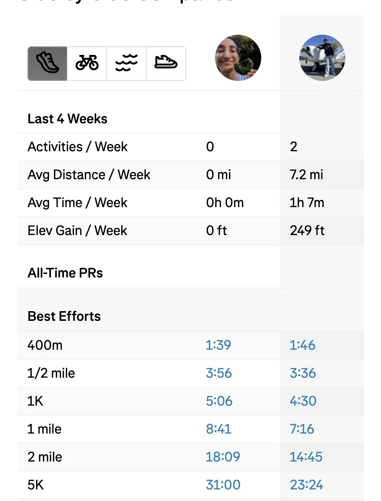
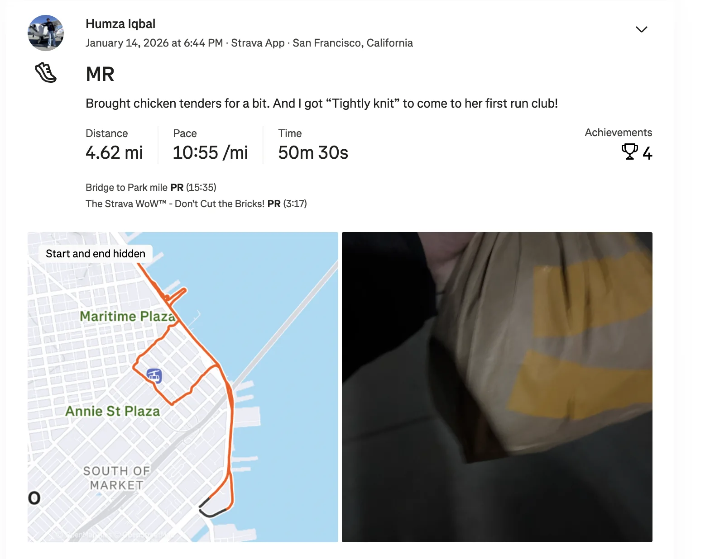
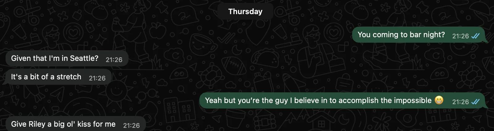
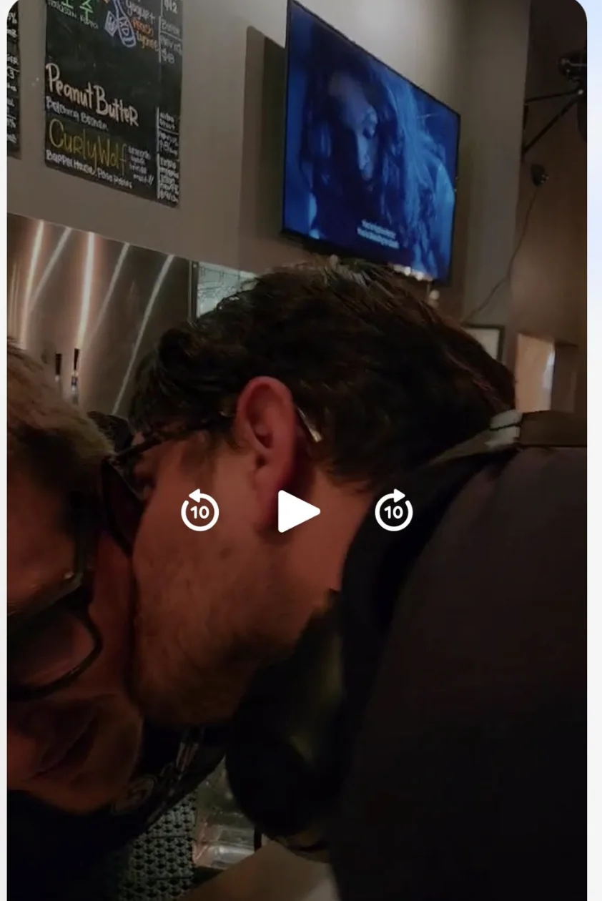

Shoutouts
Shout out to “Tightly Knit” for doing her first Midnight Runners run! Also it's her birthday today so extra shoutout for that!
Monday
Another day at work. We’re getting to the point where the days will mostly blend into each other as I acclimate so nothing too interesting.
After work I go to Mission Run Club where I learn a brutal lesson about the importance of bag drops. Unlike Midnight Runners this club doesn’t have one of those meaning I either can’t bring a bag or I have to carry it myself. Before when I did this run club I didn’t have that whole job thing so that wasn’t a concern for me; now I learn what its like to run with this backpack and let me tell you its not fun.
If I run with it on my backpack all the bouncing around will cause the zippers to come undone meaning I have to stop every so often to rezip it. On the other hand if I run with it up front where I can rezip it more easily it feels like I’m getting punched in the gut every 5 seconds and with my laptop, clothes, headphones, and portable charger it hurts :(. I don’t think I’ve run a more brutal 3 miles before if I’m being honest here.
On the plus side I brought “The Enabler” to his first Mission Run Club and he said he enjoyed it so there is a chance my already great Mondays may become even greater :D.
Of course “The Raja of Rhythm” also joined at the end as well to sweeten the deal.
Tuesday
Just work. Onto the next
Wednesday
Today after work I do Midnight Runners with “The Enabler,” “Tightly Knit,” and one of “Tightly Knit’s” friends who I promised chicken tenders to. “Tightly Knit” did such a good job for her first run! Sadly this was in the pre newsletter days but the first time I did this run club I nigh on gave up and only kept going because I saw a Hinge date who I ran next to for a while and my pride couldn’t let me back down. As a brief aside I learned recently that this old Hinge date is on Strava and now I can definitely say after almost 2 years of running I have in fact closed the gap between us

Bringing chicken tenders proved to be a bit of a conversation starter which was cool. And everyone loved them! Definitely a very fun and wholesome bit!

Thursday
Today after the mines it's time for bar night with “The Mosher,” “The Finer things,” and “The Bartender”. For the most part it's a pretty chill night. At one point I ask “The Philosopher” if he is coming and this is what he says in response

Well given what he said here I can’t not give Riley (the person who actually bartends at this bar) a kiss right?

Friday
Today after work we have the grand debut of the meme song “The Fisherman” wrote! She will be singing / guitaring this next Wednesday at a “Pitch a Friend” event which will be a lot of fun. Between the song and the practice I’m doing to improve my first impressions I’m quite looking forward to seeing what will happen.
I got “The Writer,” “Top of the Rope,” “The Quant,” and “The Pickleballer to all come over and watch the splendid performance! It was awesome! Mad props to “The Fisherman” for doing this. Once the song was presented we hung around while I converted more people to the coveted church of Plantain chips. Our numbers are small but growing! We’re what big potato chip doesn’t want you to know about!
Later me, “The Writer,” and “The Fisherman” hung out and did a bit of a Hinge party where we all sent likes on each other’s Hinges which was fun :D.
Saturday
The day starts off with me going to Marina Run club with “Top of the Rope”. To be perfectly honest my legs were kinda sore from all the running I was doing before but that wasn’t really why I came here. No, I came because the last time I came to this run club I saw a super pretty girl. I wanted to get to know her more and I wanted “Top of the Rope” to act as my wing woman.
As I saw her come with a group of friends though I’d be lying if I said I didn’t get nervous. I knew I just needed to reach out and break in but I stood right before the wall unwilling to burst through it. I thought if I had someone else with me it would have been ok. I thought I would have figured something out. I thought wrong.
Interestingly in parallel someone came up to the two of us clearly intending to flirt with “Top of the Rope”. While it didn’t work out she did use this to reassure me that even if it doesn’t it’s still fine.
At this point the run started and I figured maybe I would get a chance later. Unfortunately my leg was really acting up at this point and “Top of the Rope” noticed I was hobbling during my run. She suggested we stop and honestly the prospect of running 3 miles with the state of my leg right now made me agree. I wasn’t interested in doing this run for it’s own sake and it’s not worth suffering through like this just for a chance to talk to ms. pretty girl (I’m sure I could come up with some better way of referring to her but I have a serious case of can’t be bothered). So me and “Top of the Rope” instead go for a nice walk from Marina to Mission for trash pickup. Big thanks for ditching run club to walk with me instead :D.
We get to trash pickup where we have quite the crowd including “The Notetaker,” “The Politician," “Not a matcha bitch,” “Granola Girlie” amongst others. It was a great time as always and given the good weather it was awesome seeing so many people out and about.
Afterwards I meet up with my Dad and we go for a walk. I mentioned in a previous episode I wanted to connect with him more so I proposed we meet up for a walk. We go through Crissy field up to Golden Gate bridge and back. Along the way my Dad tells me stories of when he was young in SF and would come down to Crissy field to watch the waves from his car. He told me how some of the guard railings around the area weren’t always around and it was more dangerous. It was really nice to hear a bit of history from his younger days like that. The little stories. He doesn’t live in SF anymore so it kinda felt like passing the torch down.
Which reminds me, my house in Mill Valley is right near the bus stop and that location was chosen specifically because my Dad liked to take the bus to the city. Now he doesn’t do that anymore as he just drives but whenever I go home to visit I take the bus to the same bus stop so it also feels like passing down the torch. That doesn’t have anything to do with the above but I quite like the story and wanted an excuse to share it.
From there I go home and work on my presentation of “The Fisherman” for the “Pitch a friend” event on Wednesday.
Once I make sufficient progress on that I go to an Irish bar over in lower Haight to try talking with people. It goes over ok I guess. The bar definitely leans older and while I commiserate with a few people about the massacre that was the 49ers vs The Sea Hawks it certainly wasn’t as successful as my usual Thursday night romps. One of my friends says “We need to get you a new hobby that doesn’t involve going to bars and not ordering anything. Perhaps board game cafes”. I would love to but there really aren’t that many of those :(. I am of the opinion we need more places where you can socialize at night where drinking isn’t the default 😤.
Sunday
A trash pickup a day keeps the cigarette butts away. Today we have “The Raja of Rhythm,” “The Notetaker,” “The Philosopher,” “Cool friend whose newsletter nickname is admittedly a work in progress” and others. Not much out of the ordinary but when an ordinary trash pickup is a continual source of joy that is not a bad thing by any means.
After trash pickup I go to Dolores park because a spikeball acquaintance is hosting some public event involving opening a bottle of jam. It’s a really tough bottle to open and I fail miserably at the endeavor. He tells me about this new AI agent app he is making which while I’m not exactly enamored by, I do respect his enthusiasm and hustle towards it. If it gives him meaning and makes him happy then I’m happy to see him do it. He asks me some questions about getting AI models to run on small devices and I share some tricks about how he might do that which he was quite keen to adapt. He also roasts me for my filler words while I’m speaking. He asked me how old I am and I said “I’m like 29” and he responded “Like? You don’t know your exact age?”.
This was another (albeit smaller) piece of feedback on the first impression that I have. The way I come off can make me sound unconfident and uncertain. I haven’t been indexing on this as much but it is worth thinking about how I can reduce filler words. Perhaps more …. Pauses. Perhaps phrases to indicate I’m gathering my train of thought.
I’m also elated to say I have a long form bit that I’m doing. I can’t say exactly what it is but here is an encrypted message
U2FsdGVkX19me1qWzwWl+e3wHenZLp2KHa3NatHsjPZ2CKMvvhAGIP/w7h0WpEAZfVSeZ5WUJK9tG/knH+nZM3sD5+yINii1Ybbve0EUgA9jwDOMZek8utK+U/7LmGN0
The decrypted message will be revealed once certain conditions are met. As to when that will be, well that depends on *you*. I look forward to playing this game with you.
Later in the day after a brief stint at the Iqbal cave I go to my usual Thursday bar for a regulars special. Since this bar is very community driven with a lot of regulars they are hosting a special party for the regulars so we can all get to know each other. Naturally the Canadian pack that I roll with including “The Philosopher,” “The Mosher,” “That’s nuts,” “The Best,” and “The Finer things”. I also invite “The Quant” as my +1. It was a really good time! A lot of the regulars there are pretty cool and I got to talk with folks I already know and meet some new people. I met this one girl who is big into F1 and just moved to the city recently. I’m trying to get her to become a Thursday night regular and I told her I would give her a gold star if she comes next Thursday.
The event continues for a number of hours until the bar winds up closing and we help clean up. I get to see behind the kitchen for the first time which feels a little bit like peeking into Narnia. There is an after party but at this point I’m tired and decide to head home. I’m so tired I don’t even write up the newsletter :(.